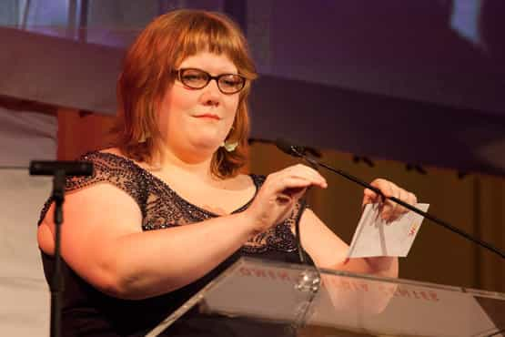

Daryush "Roosh" Valizadeh created ROK in October 2012. You can visit his blog at RooshV.com or follow him on Twitter and Facebook.


It’s no secret that I dislike Jezebel writer Lindy West (I previously named her the ugliest feminist in the world). She has enabled the degradation of American culture through her writings on fat and slut acceptance while heralding the emasculation of men. If she was given a Tumblr blog to exercise her crazed rantings, there wouldn’t be much in the way of harm, but Nick Denton, a homosexual who is head of the Gawker empire which owns Jezebel, has given her a huge voice to pollute the masses. Fat feminists throughout the country look up to her for encouragement to remain committed and unembarrassed fat feminists, brown skid marks on America’s soul.
It now pains me to remind everyone that fat feminist beliefs have real-world consequences. As of today, because of Lindy’s slothfulness, gluttony, and impaired thinking faculties, she is too fat to fly in airplanes.
This year, for the first time ever, I got on a plane and discovered that I didn’t fit in the seat. I’ve always been fat, but I was the fat person that still mostly fit. I mean, I couldn’t fit into clothes (MORE TUNICS PATTERNED LIKE A PARISIAN SUITCASE, PLEASE), and I had to be careful with butt safety (I’ll take the chair side, not the banquette, thanks), but I was still the kind of fat person who could move through the straight-size world without causing too many ripples. Until this fall.
[…]
People’s butts might be getting bigger, sure, but it’s a certainty that seats are getting smaller. I fit in every other chair. (Some people don’t. That’s fine too. Those are good bodies too. Those people deserve respect and accommodations too, without caveats.)
Pre-boarding
If you happened not to fit in an airplane seat, you may take that as an indication to lay off the Starbucks milkshakes for some time. But not Lindy. It’s not her fault that she is too big—it’s the airline’s fault for not making seats wide enough to accommodate her monstrous frame. If that was the end of the story then we could go on with our lives with only a shake of the head, but it only scratches the surface of the noxious spew she released in her rant. She finds blame not just with the airline, but with the man sitting next to her and a pervasive “fat shaming” culture (i.e. everyone who doesn’t share her love of Chipotle burritos) for causing what appears to be a bad day where she was not graced with positive attention, romantic love, and complimentary in-flight Cinnabons.
Here she is instigating a fight with her seat neighbor after holding up the plane because she was partying hard the night before in a bathtub filled with pina colada…
I’d almost missed the plane—I was that person staggering on board just before the doors closed—and I’m sure he thought he was going to have the row all to himself. I flashed him an apologetic smile (I know that aeronautical heartbreak too well!) and pointed to the middle seat. “Hey, sorry, I’m over there.” He looked at my body, sort of glared blankly at my hips, but didn’t respond or make eye contact with me. Then, as I went to put my bag in the overhead bin, I heard him mutter something sour.
“[Something something] say excuse me.”
My adrenaline went bonkers. Was someone being a dick to me? In person? At 7 am? In an enclosed space? For no reason? When I have a hangover? And we’re about to be stuck next to each other for the next five hours? I’m used to men treating me like garbage virtually, or from fast-moving cars, but this close-quarters IRL shit-talking was a jarring novelty.
Me: “What?”
Him: “Nothing.”
Me: “No, you said something. What did you say?”
Him: “Nothing.”
Me: “No. What did you say? Tell me.”
Re-enactment of Lindy West arguing with her seat mate (add 300 pounds)
She continued to harass this individual during the flight with what appears to be assault and battery.
As soon as he fell asleep (with his mouth open like a NERD), I passive-aggressively jarred his foot with my backpack and then said, “OH, EXCUSE ME,” because I am an adult. We ignored each other for the rest of the flight.
Poor man—he was not only anxious about a plane crash but also if Lindy would continue her aggression by sitting on him and ending all of his life functions. I like to think of myself as hyper-masculine, but I’d be downright fearful to be attacked by a person shaped like a large box, male or female…

She received an intense barrage of criticism from her very own loyal readers:
“Recently, I had to get up early for a 7 a.m. flight to attend a family member’s funeral. I only had about an hour’s worth of sleep, because I was back and forth between phone calls making arrangements. Things at the airport were crazy as usual, and the flight wasn’t looking like it would get out in time. Right at the last minute, the flight attendants let a young woman on the plane – lucky for her, last time I was running late they wouldn’t let me board. Oh well.
She made a beeline for her seat, which was next to mine. She reeked like booze – must have been hungover – and then fumbled with her luggage bumping me several times. I wasn’t feeling my best, so I mumbled ‘would be nice to hear an ‘excuse me’.’ Big mistake. She went ballistic on me, screaming ‘WHAT DID YOU SAY?’ over and over without dropping it. Finally I repeated myself, and she continued to huff and puff about the situation. The plane finally took off and I tried to get some shut-eye. Unfortunately, she kept kicking me and saying very loudly ‘EXCUSE ME.’
I tell you, sometimes people are just jerks. As if air travel wasn’t enough of a pain!”
Let’s review an excerpt of where she describes her corpulence. It’s so superabundant I’ve received word from academic circles that noted anthropologists have called dibs on her body after she succumbs to the diabetes.
But even worse than any physical pain is the anxiety of walking up the aisle and not knowing what plane you’re on. Am I going to fit this time? Will I have to ask for a seatbelt extender? Is this a 17-incher or an 18-incher? Did I get on early enough that I can get myself crammed in before someone comes and sits next to me? Is the person next to me going to hate me? Doeseveryone on this plane hate me? I paid money for this?
People’s butts might be getting bigger, sure, but it’s a certainty that seats are getting smaller. I fit in every other chair. (Some people don’t. That’s fine too. Those are good bodies too. Those people deserve respect and accommodations too, without caveats.)
I’m sure some fat people are fat by their own hand, without any underlying medical conditions, but a lot of other fat people are fat because they’re sick or disabled.
Rest assured she does not have a medical condition causing her obesity (though we can’t rule out a mental disorder). She has actually flaunted her suicidal overeating on Youtube by eating neon orange cookies that don’t even seem to have real food origins…
This is the woman who is a role model for American females today. This is the woman whose ideas are so important to the mainstream media that she recently won a “Woman’s Media Center” award for being a “fat activist” (here is her surprisingly articulate acceptance speech). This is the woman who has one of the heftiest voices on America’s largest blog for women. This is the future of America—a future of premature deaths by diabetes, strokes, and heart attacks, a future of women screeching about how men and the patriarchy sent them to the grave by allowing them to eat 5,000 calories a day.
Is this who we want having influence in our country? Society must realize there are consequences to fat feminist beliefs. They range from the concrete (not fitting on airplanes) to creating a class of perennial female victims-seekers who have no notion of personality responsibility. Instead of focusing on self-improvement, they seek to blame everyone else for their problems, even innocent men on airplanes who have their property damaged from the canckled legs of deranged women.
Lindy West is externalizing her 200 extra pounds onto others. She is externalizing her great unhappiness in life by belching hatred about men and society, or outright attacking men on airplanes who she believes should compliment her obesity or ask her out on a date to TGI Fridays. The road to feminism and obesity is a sad one indeed, and my only hope is that the women who read her angry scribbles wake up to the fact that there is no pot of gold at the end of a fat feminist’s rainbow—just a shovel and a big pot of lard.
 If you like this article and are concerned about the future of the Western world, check out Roosh's book Free Speech Isn't Free. It gives an inside look to how the globalist establishment is attempting to marginalize masculine men with a leftist agenda that promotes censorship, feminism, and sterility. It also shares key knowledge and tools that you can use to defend yourself against social justice attacks. Click here to learn more about the book. Your support will help maintain our operation.
If you like this article and are concerned about the future of the Western world, check out Roosh's book Free Speech Isn't Free. It gives an inside look to how the globalist establishment is attempting to marginalize masculine men with a leftist agenda that promotes censorship, feminism, and sterility. It also shares key knowledge and tools that you can use to defend yourself against social justice attacks. Click here to learn more about the book. Your support will help maintain our operation.
Read Next: How To Approach Girls On Airplanes